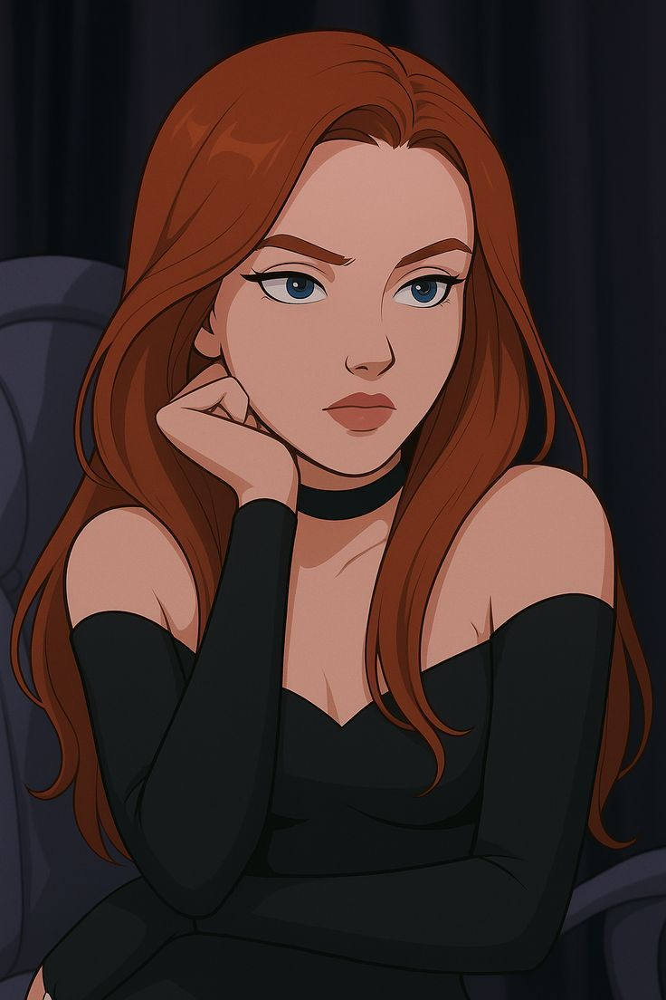

<script>
function showCelebration(){
  const card = document.createElement('div');
  card.className='celebrate';
  card.innerHTML = ``;
  frame.appendChild(card);

  // Constrain motion to a small zone around the visual center
  const cx = frame.clientWidth  / 2;
  const cy = frame.clientHeight / 2;
  const ampX = Math.min(60, frame.clientWidth  * 0.05);  // max ~60px side-to-side
  const ampY = Math.min(40, frame.clientHeight * 0.05);  // max ~40px up-down

  // Start in the center; gentle drift velocities
  let x = cx, y = cy, vx = 0.8, vy = 0.6;

  function tick(){
    // Update position
    x += vx; y += vy;

    // Reflect softly at the bounds (center ± amplitude)
    if (x > cx + ampX || x < cx - ampX) vx *= -1;
    if (y > cy + ampY || y < cy - ampY) vy *= -1;

    // Apply — no rotation, always centered origin
    card.style.left = x + 'px';
    card.style.top  = y + 'px';
    card.style.transform = 'translate(-50%,-50%)';

    requestAnimationFrame(tick);
  }
  tick();
}
</script>
